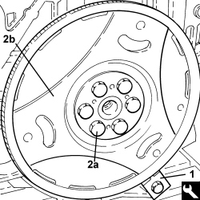
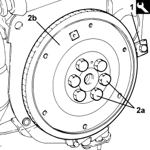

1024B20 ENGINE FLYWHEEL - R + R FOR VERSIONS WITH AUTOMATIC TRANSMISSION
- Path
- Procedures > 10 ENGINE > 1024 CRANKSHAFT AND FLYWHEEL > 1024B ENGINE FLYWHEEL > 1024B20 ENGINE FLYWHEEL - R + R FOR VERSIONS WITH AUTOMATIC TRANSMISSION
- Kind
- repair procedure (removal / refitting; the operation number is the code)
- Applies to
- engines: 2.2, 1.9 JTD 16v, 2.4 JTD 20v; all production periods; only with equipment: AUTOMATIC TRANSMISSION
- Interactive page
- https://sloeber94.github.io/elrnDB-fCrm/en/#/194002139
Applies to: engines: 2.2; all production periods
 Removing
Removing
 Refitting
RefittingOp. 2130A10 AUTOMATIC TRANSMISSION - R + R
1. Fit the flywheel lock.
Tool | Description | Function | Validity |
|---|---|---|---|
1860846000 | Counter-torque | Flywheel lock |
2. Undo the bolts (2a) and remove the engine flywheel (2b).

Applies to: engines: 2.2; all production periods
Refitting
Removing- Place the flywheel in its housing and secure it by tightening the new bolts to the recommended torque.
Component | Fastening | dia | Value (daNm) | Validity |
|---|---|---|---|---|
Engine flywheel | Bolt (pretreated to be replaced) | M10x1.25 | (crankshaft side) 5.3 + 25° | 2.2 CAE |
- Remove the flywheel lock.
Tool | Description | Function | Validity |
|---|---|---|---|
1860846000 | Counter-torque | Flywheel lock |
Applies to: engines: 1.9 JTD 16v, 2.4 JTD 20v; all production periods
Removing
RefittingOp. 2130A10 AUTOMATIC TRANSMISSION - R + R
Op. 1004B14 POWER UNIT WITH AUTOMATIC TRANSMISSION R + R
Op. 1004D20 POWER UNIT (AUTOMATIC TRANSMISSION) REMOVED, REMOVE AND RE-BUILD
1. Fit the flywheel lock.
Tool | Description | Function | Validity |
|---|---|---|---|
1860846000 | Counter-torque | Flywheel lock |
2. Undo the bolts (2a) and remove the engine flywheel (2b).

Applies to: engines: 1.9 JTD 16v, 2.4 JTD 20v; all production periods
Refitting
Removing- Place the flywheel in its housing and secure it by tightening the new bolts to the recommended torque.
Component | Fastening | dia | Value (daNm) | Validity |
|---|---|---|---|---|
Engine flywheel | Bolt (pretreated to be replaced) | M12x1.25 | (crankshaft side) .................. | 1.9 JTD 16v CAE 2.4 JTD 20v CAE |
- Remove the flywheel lock.
Tool | Description | Function | Validity |
|---|---|---|---|
1860846000 | Counter-torque | Flywheel lock |
Topics linked from this page (3)
- 1004B14 POWER UNIT WITH AUTOMATIC TRANSMISSION R + R
- 1004D20 POWER UNIT (AUTOMATIC TRANSMISSION) REMOVED, REMOVE AND RE-BUILD
- 2130A10 AUTOMATIC TRANSMISSION - R + R